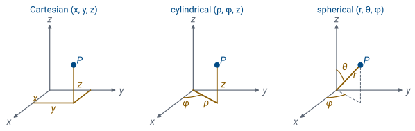
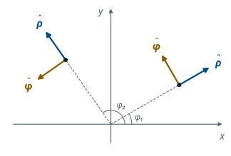
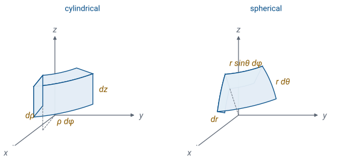
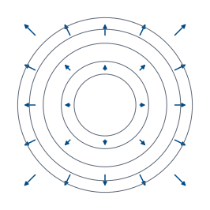
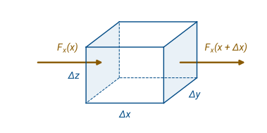
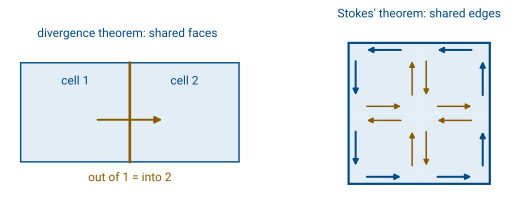
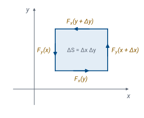
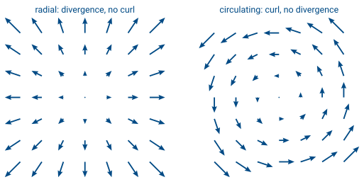
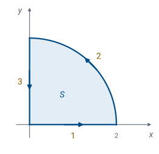

L17 - Vector and Coordinate System Review#
Vector and Coordinate System Review
Today we sharpen the vector calculus that every lesson in Module 2 uses.
Lesson 17 · Module 2: Electrostatics · Maj Ellis · Dr. Neil Rogers
Learning Objectives
- I can recognize and apply common vector calculus operations, such as: gradient, divergence, curl, and Laplacian in the three major coordinate systems.
- I can calculate surface and volume integrals in rectangular, cylindrical, and spherical coordinate systems.
- I can differentiate between Stokes' Theorem and the Divergence Theorem and apply them to various problems to simplify integrals.
Module 1 described a transmission line with two scalars, a voltage and a current, that varied along one coordinate, \(z\). Module 2 turns to the fields themselves. An electric field has a magnitude and a direction at every point in space, so we need the tools of vector calculus to describe it, to add up its sources, and to read its behavior. This lesson reviews those tools and derives each one from a small piece of space, the same way Lesson 3 derived the telegrapher’s equations from a short section of line. Graded Review 1 is due today.
Fields Need Vector Calculus
A field \(\mathbf{E}(x,y,z)\) assigns a vector to every point in space.
Lessons 18–19: add up charges with line, surface, and volume integrals.
Lessons 20–21: flux and divergence.
Lessons 22–23: gradient and Laplacian.
A vector field assigns a vector to every point in a region: the electric field \(\mathbf{E}\), the magnetic field \(\mathbf{H}\), the current density \(\mathbf{J}\). A scalar field assigns a number to every point: the electric potential \(V\), or the charge density \(\rho_v\). Every tool in this lesson has a job later in the module. Coulomb’s law in Lessons 18 and 19 adds up the field of a charge spread along a line, over a surface, or through a volume, so we need the length, area, and volume elements of each coordinate system. Gauss’s law in Lessons 20 and 21 counts the field leaving a closed surface, which is the divergence. The potential in Lessons 22 and 23 gives the field through the gradient and obeys an equation built on the Laplacian. The curl and Stokes’ theorem wait for Ampère’s law in Module 3, but we derive them today alongside their partners.
Three Coordinate Systems

We locate a point three ways, and we choose the one that matches the symmetry of the problem. Cartesian coordinates \((x, y, z)\) suit flat sheets and boxes. Cylindrical coordinates \((\rho, \phi, z)\) suit a line charge or a coaxial cable: \(\rho\) is the distance from the \(z\) axis, \(\phi\) is the angle measured from the \(x\) axis in the \(xy\) plane, and \(z\) is the height. Spherical coordinates \((r, \theta, \phi)\) suit a point charge or a charged sphere: \(r\) is the distance from the origin, \(\theta\) is the angle down from the \(+z\) axis, running from \(0\) to \(\pi\), and \(\phi\) is the same angle as in cylindrical coordinates.
The conversions follow from the right triangles in the figure. Dropping \(P\) onto the \(xy\) plane gives a point at distance \(\rho\) from the origin, with legs \(x = \rho\cos\phi\) and \(y = \rho\sin\phi\). In the vertical plane through \(P\) and the \(z\) axis, the segment \(r\) makes angle \(\theta\) with the axis, so its vertical leg is \(z = r\cos\theta\) and its horizontal leg is \(\rho = r\sin\theta\). Going the other way, \(\rho = \sqrt{x^2 + y^2}\), \(\phi = \tan^{-1}(y/x)\) in the correct quadrant, and \(r = \sqrt{x^2 + y^2 + z^2}\).
Unit Vectors That Turn

The Cartesian unit vectors \(\hat{\mathbf{x}}\), \(\hat{\mathbf{y}}\), and \(\hat{\mathbf{z}}\) point the same way everywhere. The cylindrical ones do not. At each point, \(\hat{\boldsymbol{\rho}}\) points directly away from the \(z\) axis and \(\hat{\boldsymbol{\phi}}\) points in the direction of increasing \(\phi\), counterclockwise seen from above. The figure draws both at two points, and they have turned between them.
To write them in Cartesian form, project each one onto the axes. \(\hat{\boldsymbol{\rho}}\) has length one and makes angle \(\phi\) with the \(x\) axis, so its \(x\) component is \(\cos\phi\) and its \(y\) component is \(\sin\phi\). \(\hat{\boldsymbol{\phi}}\) is \(\hat{\boldsymbol{\rho}}\) rotated \(90^\circ\) counterclockwise, which takes \((\cos\phi, \sin\phi)\) to \((-\sin\phi, \cos\phi)\).
That dependence on \(\phi\) matters every time we integrate. A constant can come out of an integral, but \(\hat{\boldsymbol{\rho}}\) is not constant when \(\phi\) varies. The safe method is to convert to Cartesian unit vectors first. For example, around a full circle, \(\int_0^{2\pi} \hat{\boldsymbol{\rho}}\ d\phi = \hat{\mathbf{x}}\int_0^{2\pi}\cos\phi\ d\phi + \hat{\mathbf{y}}\int_0^{2\pi}\sin\phi\ d\phi = 0\), which is why the sideways pulls cancel for the ring of charge in Lesson 19. The spherical unit vectors \(\hat{\mathbf{r}}\), \(\hat{\boldsymbol{\theta}}\), and \(\hat{\boldsymbol{\phi}}\) turn in the same way.
Metric Factors
Change one coordinate by \(du\), and the point moves a distance \(h\ du\):
System |
\(h_1\) |
\(h_2\) |
\(h_3\) |
|---|---|---|---|
Cartesian \((x, y, z)\) |
1 |
1 |
1 |
Cylindrical \((\rho, \phi, z)\) |
1 |
\(\rho\) |
1 |
Spherical \((r, \theta, \phi)\) |
1 |
\(r\) |
\(r\sin\theta\) |
An angle is not a length, so a change in an angle moves a point by a distance that depends on where the point is. In cylindrical coordinates, changing \(\rho\) by \(d\rho\) moves the point a distance \(d\rho\), and changing \(z\) by \(dz\) moves it \(dz\). Changing \(\phi\) by \(d\phi\) moves it along a circle of radius \(\rho\), and the arc of a circle is its radius times the angle, so the distance is \(\rho\ d\phi\). In spherical coordinates, changing \(r\) moves the point \(dr\). Changing \(\theta\) moves it along a circle of radius \(r\) centered at the origin, a distance \(r\ d\theta\). Changing \(\phi\) moves it along a horizontal circle whose radius is the distance from the \(z\) axis, \(r\sin\theta\), a distance \(r\sin\theta\ d\phi\).
The factor that turns a change in a coordinate into a distance is the metric factor \(h\). With coordinates \((u_1, u_2, u_3)\) and unit vectors \((\hat{\mathbf{u}}_1, \hat{\mathbf{u}}_2, \hat{\mathbf{u}}_3)\), every system has the same form, \(d\mathbf{l} = \hat{\mathbf{u}}_1 h_1\ du_1 + \hat{\mathbf{u}}_2 h_2\ du_2 + \hat{\mathbf{u}}_3 h_3\ du_3\). The table holds the three sets of metric factors, and every formula in the rest of this lesson is written once in terms of them.
Area and Volume Elements

Each small element in the figure is nearly a box, and its edges are the three distances from the previous frame. Its volume is the product of the three edges, \(dv = (h_1\ du_1)(h_2\ du_2)(h_3\ du_3)\). In cylindrical coordinates that is \(d\rho \cdot \rho\ d\phi \cdot dz = \rho\ d\rho\ d\phi\ dz\); in spherical coordinates it is \(dr \cdot r\ d\theta \cdot r\sin\theta\ d\phi = r^2\sin\theta\ dr\ d\theta\ d\phi\).
A face of the element is a product of two edges, and its direction is the unit vector normal to it. On a cylinder of radius \(\rho = a\), the surface element is \(d\mathbf{s} = \hat{\boldsymbol{\rho}}\ a\ d\phi\ dz\). On a flat end cap of a cylinder, \(d\mathbf{s} = \hat{\mathbf{z}}\ \rho\ d\rho\ d\phi\). On a sphere of radius \(r = a\), \(d\mathbf{s} = \hat{\mathbf{r}}\ a^2\sin\theta\ d\theta\ d\phi\). Forgetting the \(\rho\) or the \(r^2\sin\theta\) is the most common mistake in this module; it gives an area or a volume with the wrong units.
Worked Example: an Area and a Volume
Worked example — a sphere and a cylinder
The area of a sphere of radius \(a\). On the sphere \(r = a\), the area element is \(a^2\sin\theta\ d\theta\ d\phi\). The sphere runs over \(0 \le \theta \le \pi\) and \(0 \le \phi \le 2\pi\). The integrand separates into a function of \(\theta\) times a function of \(\phi\), so the double integral is a product of two single integrals: \(\int_0^{\pi}\sin\theta\ d\theta = [-\cos\theta]_0^{\pi} = 1 - (-1) = 2\), and \(\int_0^{2\pi} d\phi = 2\pi\). The area is \(a^2 \cdot 2 \cdot 2\pi = 4\pi a^2\).
The volume of a cylinder of radius \(a\) and height \(h\). The volume element is \(\rho\ d\rho\ d\phi\ dz\), over \(0 \le \rho \le a\), \(0 \le \phi \le 2\pi\), and \(0 \le z \le h\). Again the integral separates: \(\int_0^{a}\rho\ d\rho = a^2/2\), \(\int_0^{2\pi} d\phi = 2\pi\), and \(\int_0^{h} dz = h\). The volume is \(\pi a^2 h\).
Both answers are formulas you already know, which is the check that the elements are right. Leaving out the \(\sin\theta\) would give \(2\pi^2 a^2\), and leaving out the \(\rho\) would give \(2\pi a h\), which is not even a volume.
The Gradient
Chain rule, then \(du_i = (\hat{\mathbf{u}}_i \cdot d\mathbf{l})/h_i\):
The gradient answers a practical question: if we take a small step \(d\mathbf{l}\) from a point, how much does a scalar field \(f\) change? The chain rule gives the change as the sum of the change from each coordinate, \(df = \sum_i (\partial f/\partial u_i)\ du_i\). To write that in terms of the step, notice that the step’s component along \(\hat{\mathbf{u}}_i\) is \(\hat{\mathbf{u}}_i \cdot d\mathbf{l} = h_i\ du_i\), so \(du_i = (\hat{\mathbf{u}}_i \cdot d\mathbf{l})/h_i\). Substituting,
The vector in parentheses is the gradient, \(\nabla f\), and the change in \(f\) along any step is \(df = \nabla f \cdot d\mathbf{l}\). With the metric factors from the table:
The operator \(\nabla\), read “del,” is the gradient with \(f\) removed. We use it with a dot for the divergence and with a cross for the curl, but those two are not simply \(\nabla\) dotted or crossed into a field outside Cartesian coordinates; each one has its own derivation below.
What the Gradient Means

\(\nabla f\) points the way \(f\) increases fastest.
\(|\nabla f|\) is that fastest rate.
\(\nabla f\) is perpendicular to the level surfaces of \(f\).
All three facts come from \(df = \nabla f \cdot d\mathbf{l} = |\nabla f|\ |d\mathbf{l}|\cos\alpha\), where \(\alpha\) is the angle between the step and the gradient. For a step of fixed length, \(df\) is largest when \(\alpha = 0\), so the gradient points in the direction of fastest increase, and the rate of increase in that direction is \(|\nabla f|\). Along a level surface, where \(f\) is constant, \(df = 0\) for every step, so \(\cos\alpha = 0\): the gradient is perpendicular to the level surface.
The figure shows \(f = x^2 + y^2\), whose level curves are circles. In Cartesian form, \(\nabla f = \hat{\mathbf{x}}\ 2x + \hat{\mathbf{y}}\ 2y\). At the point \((1, 1)\) that is \(2\hat{\mathbf{x}} + 2\hat{\mathbf{y}}\), with magnitude \(2\sqrt{2} = 2.83\). The same function in cylindrical coordinates is \(f = \rho^2\), and \(\nabla f = \hat{\boldsymbol{\rho}}\ 2\rho\): at \((1, 1)\), \(\rho = \sqrt{2}\), and the magnitude is again \(2\sqrt{2}\), pointing straight outward. The gradient does not depend on the coordinate system, only its components do. In Lesson 22 the electric field is the negative gradient of the potential, \(\mathbf{E} = -\nabla V\), so the field points downhill in potential and crosses every equipotential surface at a right angle.
Divergence: Flux Out of a Small Box

The flux of a field through a surface, \(\int_S \mathbf{F}\cdot d\mathbf{s}\), adds up the component of the field normal to the surface over its area. For a closed surface, with \(d\mathbf{s}\) pointing outward, the flux is the net amount of field leaving. The divergence is that net outward flux per unit volume, for a volume that shrinks to a point. It measures how much a point acts as a source of the field.
We compute it for the small box in the figure. The two faces normal to \(x\) each have area \(\Delta y\ \Delta z\). On the face at \(x + \Delta x\) the outward normal is \(+\hat{\mathbf{x}}\), so the flux out is \(F_x(x + \Delta x)\ \Delta y\ \Delta z\). On the face at \(x\) the outward normal is \(-\hat{\mathbf{x}}\), so the flux out is \(-F_x(x)\ \Delta y\ \Delta z\). Their sum is the difference \([F_x(x+\Delta x) - F_x(x)]\ \Delta y\ \Delta z\). Multiplying and dividing by \(\Delta x\) turns the difference into a difference quotient, and as \(\Delta x \to 0\) it becomes \((\partial F_x/\partial x)\ \Delta x\ \Delta y\ \Delta z\), the same step that produced the telegrapher’s equations in Lesson 3. The other two pairs of faces give \(\partial F_y/\partial y\) and \(\partial F_z/\partial z\) times the same volume. Dividing the total by the volume \(\Delta v = \Delta x\ \Delta y\ \Delta z\) gives the divergence in Cartesian coordinates.
Divergence in Any Coordinate System
Face area \(h_2h_3\ \Delta u_2\ \Delta u_3\) changes with \(u_1\), so it goes inside the derivative:
In curvilinear coordinates the box from the last frame has curved faces, and the area of a face changes from one side of the box to the other. The face normal to \(\hat{\mathbf{u}}_1\) has edges \(h_2\ \Delta u_2\) and \(h_3\ \Delta u_3\), so its area is \(h_2h_3\ \Delta u_2\ \Delta u_3\), and the flux through it is \(F_1 h_2 h_3\ \Delta u_2\ \Delta u_3\). The net flux out of the pair of faces at \(u_1\) and \(u_1 + \Delta u_1\) is the change in that whole product, which in the limit is \(\left[\partial(h_2h_3F_1)/\partial u_1\right]\Delta u_1\ \Delta u_2\ \Delta u_3\). The metric factors stay inside the derivative because they change with \(u_1\). Adding the other two pairs and dividing by the volume \(h_1h_2h_3\ \Delta u_1\ \Delta u_2\ \Delta u_3\) gives the general form above. With the metric factors from the table:
As an example, take the field \(\mathbf{F} = \hat{\mathbf{r}}\ r\), which points straight outward and grows with distance. Only the first spherical term survives: \(\nabla \cdot \mathbf{F} = (1/r^2)\ \partial(r^3)/\partial r = 3\). The field has the same positive divergence everywhere. In Lesson 21 the divergence of the electric flux density at a point equals the charge density there, \(\nabla \cdot \mathbf{D} = \rho_v\).
The Divergence Theorem

The divergence describes one tiny box. The divergence theorem adds up the boxes. Divide a volume \(V\) into many small cells. For each cell, the definition of divergence says the flux out of its surface is \((\nabla \cdot \mathbf{F})\ \Delta v\). Now add the flux out of every cell. A face shared by two neighboring cells, as on the left of the figure, appears twice in the sum: the flux leaving cell 1 through it is exactly the flux entering cell 2, so the two terms cancel. Every interior face cancels this way. Only the faces on the outer surface \(S\) have no neighbor, so the sum of all the cell fluxes is the flux through \(S\). As the cells shrink, the sum on the left becomes a volume integral.
The theorem trades a surface integral for a volume integral, whichever is easier. For a check, use \(\mathbf{F} = \hat{\mathbf{r}}\ r\) on a sphere of radius \(a\). The volume integral is \(\int_V 3\ dv = 3 \cdot \tfrac{4}{3}\pi a^3 = 4\pi a^3\). On the surface, \(\mathbf{F}\cdot d\mathbf{s} = a \cdot a^2\sin\theta\ d\theta\ d\phi\), and the surface integral is \(a^3 \cdot 4\pi\). The two sides agree. Lesson 21 uses exactly this theorem to turn the integral form of Gauss’s law into its point form.
Curl: Circulation Around a Small Loop

The circulation of a field around a closed path, \(\oint_C \mathbf{F}\cdot d\mathbf{l}\), adds up the component of the field along the path. The curl is circulation per unit area, around a loop that shrinks to a point, and its component along the loop’s normal \(\hat{\mathbf{n}}\) measures how much the field swirls around that axis. The direction follows the right-hand rule: curl the fingers along the path, and the thumb points along \(\hat{\mathbf{n}}\).
The figure takes a small loop in the \(xy\) plane, traversed counterclockwise, so its normal is \(+\hat{\mathbf{z}}\). Go around it one edge at a time. Along the bottom, at height \(y\), the path runs in \(+x\) and contributes \(F_x(y)\ \Delta x\). Up the right side, at \(x + \Delta x\), it contributes \(F_y(x+\Delta x)\ \Delta y\). Along the top, at \(y + \Delta y\), the path runs in \(-x\) and contributes \(-F_x(y+\Delta y)\ \Delta x\). Down the left side, at \(x\), it contributes \(-F_y(x)\ \Delta y\). Grouping the two \(F_y\) terms and the two \(F_x\) terms gives the second line. Each bracket is a difference, and in the limit the first becomes \((\partial F_y/\partial x)\ \Delta x\ \Delta y\) and the second \((\partial F_x/\partial y)\ \Delta x\ \Delta y\). Dividing by the area \(\Delta s = \Delta x\ \Delta y\) gives the \(z\) component of the curl. Loops in the other two planes give the other two components.
Curl in Any Coordinate System

On a curvilinear loop the edges have lengths \(h_1\ \Delta u_1\) and \(h_2\ \Delta u_2\), and both can change across the loop. Repeating the four-edge sum with those lengths, the contribution of the two edges along \(\hat{\mathbf{u}}_2\) is the change in \(h_2F_2\ \Delta u_2\) from one side to the other, and likewise for \(h_1F_1\). Dividing by the area \(h_1h_2\ \Delta u_1\ \Delta u_2\) gives the component along \(\hat{\mathbf{u}}_3\),
and the other two components follow by cycling \(1 \to 2 \to 3 \to 1\). The determinant above packs all three into one expression. In cylindrical coordinates, for example, the \(z\) component is \((1/\rho)\left[\partial(\rho F_\phi)/\partial\rho - \partial F_\rho/\partial\phi\right]\).
The figure contrasts the two derivatives. The field \(\hat{\boldsymbol{\rho}}\ \rho\) on the left spreads outward: its divergence is \((1/\rho)\ \partial(\rho^2)/\partial\rho = 2\) and its curl is zero. The field \(\hat{\boldsymbol{\phi}}\ \rho\) on the right circulates: its divergence is \((1/\rho)\ \partial(\rho)/\partial\phi = 0\) and its curl is \(\hat{\mathbf{z}}\ (1/\rho)\ \partial(\rho^2)/\partial\rho = 2\hat{\mathbf{z}}\). Divergence detects sources; curl detects circulation.
Worked example — divergence and curl of one field
Take \(\mathbf{H} = \hat{\mathbf{x}}\left(3y + z^2/2\right) + \hat{\mathbf{y}}\ (2x - z) + \hat{\mathbf{z}}\ 3xy\).
Divergence. Each component is differentiated by its own coordinate: \(\partial(3y + z^2/2)/\partial x = 0\), \(\partial(2x - z)/\partial y = 0\), and \(\partial(3xy)/\partial z = 0\), so \(\nabla \cdot \mathbf{H} = 0\).
Curl. With all \(h = 1\), expanding the determinant gives
so \(\nabla\times\mathbf{H} = \hat{\mathbf{x}}(3x + 1) + \hat{\mathbf{y}}(z - 3y) - \hat{\mathbf{z}}\). This field has no sources anywhere but circulates everywhere, which is how a magnetic field behaves in Module 3.
Stokes’ Theorem
Shared edges cancel; only the boundary \(C\) remains.
Orientation: right-hand rule from \(C\) to \(d\mathbf{s}\).
Stokes’ theorem does for curl what the divergence theorem does for divergence. Tile a surface \(S\) with small loops, all traversed in the same sense, as on the right of the tiling figure two frames back. For each loop, the definition of curl says its circulation is \((\nabla\times\mathbf{F})\cdot\hat{\mathbf{n}}\ \Delta s\). Now add the circulation of every loop. An edge shared by two neighboring loops is traversed once in each direction, so its two contributions cancel. Only the edges on the boundary \(C\) of the surface have no neighbor, and the sum of all the circulations is the circulation around \(C\). As the loops shrink, the sum on the left becomes a surface integral.
The two theorems are easy to confuse, so compare them. The divergence theorem relates a volume to the closed surface around it, and uses the divergence. Stokes’ theorem relates an open surface to the closed path around its edge, and uses the curl. The direction of \(d\mathbf{s}\) in Stokes’ theorem is tied to the direction of travel around \(C\) by the right-hand rule.
Worked Example: Stokes’ Theorem

Worked example — both sides of Stokes’ theorem
Verify Stokes’ theorem for \(\mathbf{E} = \hat{\boldsymbol{\rho}}\ \rho\sin\phi + \hat{\boldsymbol{\phi}}\ \rho^2\) on the quarter disk of radius 2 in the figure, traversed counterclockwise.
The line integral, one path at a time.
Path 1, along \(\phi = 0\) from \(\rho = 0\) to 2: \(d\mathbf{l} = \hat{\boldsymbol{\rho}}\ d\rho\), and \(E_\rho = \rho\sin 0 = 0\). The integral is 0.
Path 2, along \(\rho = 2\) from \(\phi = 0\) to \(\pi/2\): \(d\mathbf{l} = \hat{\boldsymbol{\phi}}\ 2\ d\phi\), and \(E_\phi = 4\). The integral is \(\int_0^{\pi/2} 8\ d\phi = 4\pi\).
Path 3, along \(\phi = \pi/2\) from \(\rho = 2\) back to 0: \(d\mathbf{l} = \hat{\boldsymbol{\rho}}\ d\rho\), and \(E_\rho = \rho\). The integral is \(\int_2^0 \rho\ d\rho = -2\).
The circulation is \(4\pi - 2 = 10.57\).
The surface integral. Counterclockwise travel seen from above gives \(d\mathbf{s} = \hat{\mathbf{z}}\ \rho\ d\rho\ d\phi\), so we need the \(z\) component of the curl:
The two sides agree. Here the line integral was the easier side; in Ampère’s law in Module 3, the theorem is used in the other direction.
The Laplacian
The Laplacian of a scalar field is the divergence of its gradient. To derive it in any coordinate system, put the gradient’s components, \(F_i = (1/h_i)\ \partial f/\partial u_i\), into the general divergence. The first term becomes \(\partial(h_2h_3F_1)/\partial u_1 = \partial\left[(h_2h_3/h_1)\ \partial f/\partial u_1\right]/\partial u_1\), and \(h_2h_3/h_1 = h_1h_2h_3/h_1^2\), which gives the sum above. With the metric factors from the table:
The Laplacian measures how a function at a point compares with its average nearby: it is positive at the bottom of a bowl and negative at the top of a hill. For \(f = x^2 + y^2\), the Cartesian form gives \(2 + 2 = 4\), and the cylindrical form of \(f = \rho^2\) gives \((1/\rho)\ \partial(2\rho^2)/\partial\rho = 4\), the same answer. For \(f = 1/r\) the spherical form gives \((1/r^2)\ \partial(r^2 \cdot (-1/r^2))/\partial r = 0\) everywhere except the origin. That function is the potential of a point charge, and in Lesson 23 the potential in any region without charge obeys Laplace’s equation, \(\nabla^2 V = 0\).
Summary
Symbol / idea |
What it is |
Form to remember |
|---|---|---|
Metric factors |
Turn a change in a coordinate into a distance |
cyl \((1, \rho, 1)\); sph \((1, r, r\sin\theta)\) |
Volume element |
Product of the three edges |
\(\rho\ d\rho\ d\phi\ dz\); \(r^2\sin\theta\ dr\ d\theta\ d\phi\) |
Unit vectors |
\(\hat{\boldsymbol{\rho}}\), \(\hat{\boldsymbol{\phi}}\), \(\hat{\mathbf{r}}\), \(\hat{\boldsymbol{\theta}}\) turn with position |
convert to Cartesian before integrating |
Gradient |
Direction and rate of fastest increase |
\(df = \nabla f \cdot d\mathbf{l}\) |
Divergence |
Net outward flux per unit volume |
\(\nabla\cdot\mathbf{F} = \lim \oint \mathbf{F}\cdot d\mathbf{s}/\Delta v\) |
Curl |
Circulation per unit area |
\((\nabla\times\mathbf{F})\cdot\hat{\mathbf{n}} = \lim \oint \mathbf{F}\cdot d\mathbf{l}/\Delta s\) |
Divergence theorem |
Volume and its closed surface |
\(\int_V \nabla\cdot\mathbf{F}\ dv = \oint_S \mathbf{F}\cdot d\mathbf{s}\) |
Stokes’ theorem |
Open surface and its boundary path |
\(\int_S (\nabla\times\mathbf{F})\cdot d\mathbf{s} = \oint_C \mathbf{F}\cdot d\mathbf{l}\) |
Laplacian |
Divergence of the gradient |
\(\nabla^2 f = \nabla\cdot\nabla f\) |
Practice
Where This Is Going
Lesson 18: Coulomb’s law gives the field of point charges.
Lesson 19: line, surface, and volume charge, integrated with today’s elements.
Today we built every tool Module 2 needs from a small piece of space: the elements of length, area, and volume, then the gradient, divergence, curl, and Laplacian, and the two theorems that connect a region to its boundary. Lesson 18 starts the physics with Coulomb’s law, the force between two point charges, and the electric field it implies. Lesson 19 spreads the charge along a line, over a surface, and through a volume, and adds up the field with the integrals from today, watching for unit vectors that turn.
Before Lesson 18, read sections 5.1 through 5.4 of Ellingson, Electromagnetics, Vol. 1.